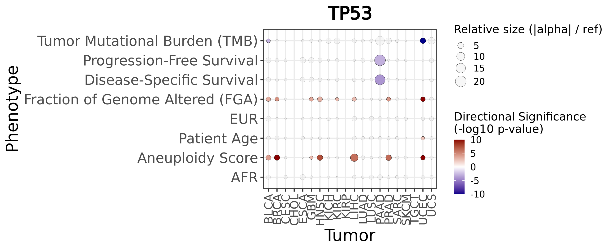
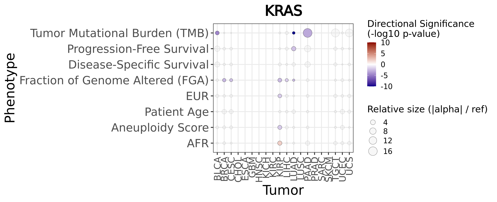

Last updated: 2026-07-12
Checks: 7 0
Knit directory: diffdriver/
This reproducible R Markdown analysis was created with workflowr (version 1.7.1). The Checks tab describes the reproducibility checks that were applied when the results were created. The Past versions tab lists the development history.
Great! Since the R Markdown file has been committed to the Git repository, you know the exact version of the code that produced these results.
Great job! The global environment was empty. Objects defined in the global environment can affect the analysis in your R Markdown file in unknown ways. For reproduciblity it’s best to always run the code in an empty environment.
The command set.seed(20250319) was run prior to running
the code in the R Markdown file. Setting a seed ensures that any results
that rely on randomness, e.g. subsampling or permutations, are
reproducible.
Great job! Recording the operating system, R version, and package versions is critical for reproducibility.
Nice! There were no cached chunks for this analysis, so you can be confident that you successfully produced the results during this run.
Great job! Using relative paths to the files within your workflowr project makes it easier to run your code on other machines.
Great! You are using Git for version control. Tracking code development and connecting the code version to the results is critical for reproducibility.
The results in this page were generated with repository version 2654af4. See the Past versions tab to see a history of the changes made to the R Markdown and HTML files.
Note that you need to be careful to ensure that all relevant files for
the analysis have been committed to Git prior to generating the results
(you can use wflow_publish or
wflow_git_commit). workflowr only checks the R Markdown
file, but you know if there are other scripts or data files that it
depends on. Below is the status of the Git repository when the results
were generated:
Ignored files:
Ignored: .RData
Ignored: .Rhistory
Ignored: .Rproj.user/
Untracked files:
Untracked: .Rproj.user.backup.20260710_225747/
Untracked: .Rproj.user.bak_2025-12-29_193924/
Untracked: .write_from_rstudio_test
Untracked: DiffDriver.Rproj.bak
Untracked: analysis/ApoE_e2.Rmd
Untracked: analysis/ApoE_e2_split.Rmd
Untracked: analysis/ApoE_e4.Rmd
Untracked: analysis/ApoE_e4_split.Rmd
Untracked: analysis/BMR.Rmd
Untracked: analysis/Simulation-Power.Rmd
Untracked: analysis/figures_5a.Rmd
Untracked: analysis/figures_5d.Rmd
Untracked: analysis/figures_5e.Rmd
Untracked: analysis/figures_5e_new.Rmd
Untracked: analysis/immunecelltype.Rmd
Untracked: analysis/plot18652d1ec8e027
Untracked: analysis/plot18652d4b40712f
Untracked: analysis/plot3c2da0190f1fa6
Untracked: analysis/plot3c2da02dd3e6d
Untracked: analysis/plot3c2da054ced126
Untracked: analysis/plot3c2da0657740a3
Untracked: analysis/plot3c2da0701d9718
Untracked: analysis/plot3c2da070d9c0b1
Untracked: analysis/plot3c2da0787e289
Untracked: analysis/supplementary_figure_2.Rmd
Untracked: analysis/test.Rmd
Untracked: code/run_workflowr.R
Unstaged changes:
Modified: analysis/clinical.Rmd
Deleted: analysis/clinical_newplot.Rmd
Deleted: analysis/example.Rmd
Modified: analysis/immunesubtypes.Rmd
Deleted: analysis/immunesubtypes_newplot.Rmd
Modified: analysis/immunetraits.Rmd
Modified: analysis/individualgene.Rmd
Modified: analysis/new_task2.Rmd
Modified: diffdriver.Rproj
Note that any generated files, e.g. HTML, png, CSS, etc., are not included in this status report because it is ok for generated content to have uncommitted changes.
These are the previous versions of the repository in which changes were
made to the R Markdown (analysis/Clinical-covariate.Rmd)
and HTML (docs/Clinical-covariate.html) files. If you’ve
configured a remote Git repository (see ?wflow_git_remote),
click on the hyperlinks in the table below to view the files as they
were in that past version.
| File | Version | Author | Date | Message |
|---|---|---|---|---|
| Rmd | 2654af4 | Qirui Zhang | 2026-07-12 | Update clinical covariate analysis |
| html | a5e9bb6 | Qirui Zhang | 2026-07-11 | Build site. |
| Rmd | d536875 | Qirui Zhang | 2026-07-11 | Publish clinical covariate analysis |
In total, 160 analyses were conducted across 20 tumor types, involving the following 8 distinct phenotypes:
For all phenotypes except Diagnosis Age, both age and gender were initially included as covariates. When Diagnosis Age itself was used as the phenotype, only gender was initially included as a covariate.
The initial analyses for CESC, PRAD, TGCT, UCEC, and UCS failed because the gender covariate had no variation within these tumor types: CESC = all female, PRAD = all male, TGCT = all male, UCEC = all female, and UCS = all female.
These failed analyses were subsequently rerun after excluding gender as a covariate. For the seven phenotypes other than Diagnosis Age, only age was included as a covariate. For Diagnosis Age, no covariates were included because age was the phenotype itself and gender had no variation within these tumor types.
This code segment scans through analysis output directories, identifies relevant result files (*_resdd.Rd), extracts corresponding tumor types, immune phenotypes, and analysis modes(sig/reg).
get_files <- function(outputdir, tumors = NULL, phenotypes = NULL) {
files <- list.files(
path = outputdir,
pattern = "_resdd\\.Rd$",
recursive = TRUE,
full.names = TRUE
)
matching_files_txt <- sub("\\.Rd$", ".txt", files)
analysis_mode <- ifelse(grepl("_sig_", basename(files)), "sig", "reg")
inner_folder_names <- basename(dirname(files)) # e.g. "Aneuploidy.Score_BLCA_mutations"
phenotype_folder_names <- basename(dirname(dirname(files))) # e.g. "Aneuploidy.Score"
tumor_names <- mapply(function(inner_name, phen) {
pattern_front <- paste0("^", phen, "_")
tmp <- sub(pattern_front, "", inner_name)
tmp <- sub("_mutations$", "", tmp)
return(tmp)
}, inner_folder_names, phenotype_folder_names)
phenos_all <- phenotype_folder_names
filedf <- data.frame(
tumor = tumor_names,
phenotype = phenos_all,
mode = analysis_mode,
file = files,
filetxt = matching_files_txt,
stringsAsFactors = FALSE
)
if (!is.null(tumors)) {
filedf <- filedf[filedf$tumor %in% tumors, ]
}
if (!is.null(phenotypes)) {
filedf <- filedf[filedf$phenotype %in% phenotypes, ]
}
rownames(filedf) <- NULL
return(filedf)
}
filedf <- get_files(
outputdir = "/dartfs/rc/lab/S/Szhao/qiruiz/diffdriver/temp/output/clinical-covariate/"
)The provided function extracts and compiles results from analyses,
filtering specifically for significant differential genes based on a
threshold (dd.fdr < 0.1).
get_diff_table <- function(filedf, include_nonsig = TRUE){
pheno_all <- unique(filedf$phenotype)
numlist <- list()
for (p in pheno_all){
p_txtfiles <- filedf[filedf$phenotype == p, ]
numlist[[p]] <- list()
for (t in seq_len(nrow(p_txtfiles))){
txtf <- p_txtfiles[t, "filetxt"]
rdf <- p_txtfiles[t, "file"]
tumor <- p_txtfiles[t, "tumor"]
mode <- p_txtfiles[t, "mode"] # reg / sig
env <- new.env()
load(rdf, envir = env)
res_rdata <- env$res
res <- read.table(txtf, header = TRUE)
res$gene <- row.names(res)
res$mode <- mode
res$alpha <- sapply(res$gene, function(gene){
res_rdata[[gene]][["dd"]][["res.alt"]]$alpha[2]
})
res$significant <- res$dd.fdr < 0.1
if (include_nonsig) {
numlist[[p]][[ paste0(tumor, "_", mode) ]] <- res
} else {
sig_res <- res[res$dd.fdr < 0.1, ]
if (nrow(sig_res) > 0){
numlist[[p]][[ paste0(tumor, "_", mode) ]] <- sig_res
}
}
}
if (length(numlist[[p]]) == 0){
numlist[[p]] <- NULL
}
}
combined_df <- do.call(
rbind,
lapply(names(numlist), function(pheno) {
numlist.pheno <- numlist[[pheno]]
df.pheno <- do.call(rbind, lapply(names(numlist.pheno), function(tname) {
df <- numlist.pheno[[tname]]
df$tumor <- sub("_.*", "", tname)
df$mode <- sub(".*_", "", tname)
return(df)
}))
df.pheno$pheno <- pheno
return(df.pheno)
})
)
return(combined_df)
}
diff_table_all <- get_diff_table(filedf, include_nonsig = TRUE)
diff_table <- get_diff_table(filedf, include_nonsig = FALSE)The provided function generates bar plots illustrating the number of
significantly differentially expressed genes
(dd.fdr < 0.1) for each tumor type
across different phenotype contexts.
library(scales)
phenotype_label_map <- c(
"Diagnosis.Age" = "Patient Age",
"Months.of.disease.specific.survival" = "Disease-Specific Survival",
"Progress.Free.Survival.Months" = "Progression-Free Survival",
"TMB.nonsynonymous" = "Tumor Mutational Burden (TMB)",
"Fraction.Genome.Altered" = "Fraction of Genome Altered (FGA)",
"Aneuploidy.Score" = "Aneuploidy Score"
)
plot_diff_number <- function(filedf, mode = c("reg", "sig")){
filedf <- filedf[filedf$mode == mode, ]
pheno_all <- unique(filedf$phenotype)
numlist <- list()
pt <- scales::pseudo_log_trans()
mar = c(3,5,2,1)
for (p in pheno_all){
p_txtfiles <- filedf[filedf$phenotype == p, ]
numlist[[p]] <- list()
for (t in 1:nrow(p_txtfiles)){
txtf <- p_txtfiles[t, "filetxt"]
tumor <- p_txtfiles[t, "tumor"]
res <- read.table(txtf, header = TRUE)
numlist[[p]][[tumor]] <- c(
nrow(res[res$dd.fdr < 0.1,]),
nrow(res) - nrow(res[res$dd.fdr < 0.1,])
)
}
}
# par(mfrow = c(length(numlist),1), mar = c(1,5,2,0))
n_plots <- length(numlist)
layout_matrix <- matrix(1:n_plots, ncol = 1)
plot_heights <- c(rep(1, n_plots - 1), 1.4)
layout(layout_matrix, heights = plot_heights)
last_pheno <- tail(names(numlist), 1)
for (phenotype in names(numlist)) {
if (phenotype == last_pheno) {
par(mar = c(8, 5, 2, 0))
} else {
par(mar = c(1, 5, 2, 0))
}
colors <- rainbow(length(numlist[[phenotype]]))
max_height <- max(unlist(lapply(numlist[[phenotype]], function(x) sum(x))))
max_plot_height <- pt$transform(max_height)
plot(
NULL,
xlim = c(0.5, length(numlist[[phenotype]]) + 0.5),
ylim = c(0, max_plot_height * 1.3),
xlab = "",
ylab = "",
main = paste("Context:", ifelse(phenotype %in% names(phenotype_label_map),
phenotype_label_map[phenotype], phenotype)),
xaxt = "n", yaxt = "n", bty = 'n',
cex.main = 2.5
)
title(
ylab = "No. Genes",
cex.lab = 2.3
)
if (phenotype == last_pheno) {
title(xlab = "Tumor Type", cex.lab = 2, line = 6)
}
y_ticks <- c(0, 1, 2, 5, 10, 30, 60)
y_ticks <- y_ticks[y_ticks <= max_height]
axis(2, at = pt$transform(y_ticks), labels = y_ticks, cex.axis = 1.8, xpd = NA)
grid()
if (phenotype == last_pheno) {
axis(
1,
at = 1:length(numlist[[phenotype]]),
labels = names(numlist[[phenotype]]),
las = 2,
cex.axis = 1.8
)
} else {
axis(
1,
at = 1:length(numlist[[phenotype]]),
labels = FALSE,
tick = FALSE
)
}
for (i in seq_along(numlist[[phenotype]])) {
sig_count <- numlist[[phenotype]][[i]][1]
nonsig_count <- numlist[[phenotype]][[i]][2]
rect(i - 0.4, pt$transform(sig_count), i + 0.4,
pt$transform(sig_count + nonsig_count),
col = adjustcolor(colors[i], alpha.f = 0.15),
border = NA)
if (sig_count > 0) {
rect(i - 0.4, pt$transform(0), i + 0.4, pt$transform(sig_count),
col = colors[i], border = NA)
text(i, pt$transform(sig_count) * 1.2, sig_count, cex = 1.0)
}
}
}
}This function generates a series of dot plots to illustrate differential gene analysis results across various tumors and phenotypes. Each plot highlights significance (positive, negative, non-significant), p-values, and relative effect sizes.
Attaching package: 'dplyr'The following objects are masked from 'package:stats':
filter, lagThe following objects are masked from 'package:base':
intersect, setdiff, setequal, unionlibrary(ggplot2)
plot_diff_gene <- function(diff_table_all, filedf, mode = c("sig", "reg")) {
dt <- diff_table_all[diff_table_all$mode == mode, ]
all_tumors <- sort(unique(filedf$tumor))
all_phenos <- sort(unique(filedf$phenotype))
dt <- dt %>%
mutate(
tumor = factor(tumor, levels = all_tumors),
pheno = factor(pheno, levels = all_phenos)
)
gene_order <- dt %>%
group_by(gene) %>%
summarise(n = n()) %>%
arrange(desc(n)) %>%
pull(gene)
dt <- dt %>% mutate(gene = factor(gene, levels = gene_order))
all_genes <- levels(dt$gene)
plots_list <- list()
for (current_gene in all_genes) {
df_gene <- dt %>% filter(gene == current_gene)
full_grid <- expand.grid(
tumor = all_tumors,
pheno = all_phenos,
KEEP.OUT.ATTRS = FALSE
)
full_grid$tumor <- factor(full_grid$tumor, levels = all_tumors)
full_grid$pheno <- factor(full_grid$pheno, levels = all_phenos)
df_plot <- full_grid %>%
left_join(df_gene, by = c("tumor", "pheno")) %>%
mutate(
signcat = case_when(
is.na(significant) ~ "none",
significant == FALSE ~ "ns",
significant == TRUE & alpha > 0 ~ "pos",
significant == TRUE & alpha < 0 ~ "neg"
),
pvalue = dd.p,
log_pvalue = case_when(
!is.na(dd.p) & dd.p > 0 ~ -log10(dd.p),
!is.na(dd.p) & dd.p == 0 ~ 10,
TRUE ~ NA_real_
),
signed_log_pvalue = case_when(
signcat == "pos" ~ log_pvalue,
signcat == "neg" ~ -log_pvalue,
TRUE ~ NA_real_
)
) %>%
group_by(pheno) %>%
mutate(
ref_alpha = median(abs(alpha), na.rm = TRUE), # mean/max/a specified tumor
ratio_alpha = if_else(is.na(ref_alpha) | ref_alpha == 0,
NA_real_,
abs(alpha) / ref_alpha),
size_value = case_when(
signcat %in% c("pos", "neg", "ns") ~ ratio_alpha,
TRUE ~ NA_real_
)
) %>%
ungroup()
p <- ggplot() +
# For significant points (both positive and negative)
geom_point(
data = df_plot %>% filter(signcat %in% c("pos", "neg")),
aes(x = tumor, y = pheno, size = size_value, fill = signed_log_pvalue),
shape = 21,
color = "black",
stroke = 0.2,
na.rm = TRUE
) +
# For non-significant points
geom_point(
data = df_plot %>% filter(signcat == "ns"),
aes(x = tumor, y = pheno, size = size_value),
shape = 21,
fill = "grey90",
color = "black",
stroke = 0.2,
alpha = 0.3,
na.rm = TRUE
) +
geom_blank(
data = df_plot %>% filter(signcat == "none"),
aes(x = tumor, y = pheno)
) +
scale_fill_gradient2(
low = "darkblue",
mid = "white",
high = "darkred",
midpoint = 0,
name = "Directional Significance\n(-log10 p-value)",
guide = guide_colorbar(direction = "vertical"),
na.value = "#FF6700",
limits = c(-10, 10),
oob = scales::squish
) +
scale_size_continuous(
range = c(1, 8),
name = "Relative size (|alpha| / ref)"
) +
scale_x_discrete(drop = FALSE) +
scale_y_discrete(
drop = FALSE,
labels = function(x) ifelse(x %in% names(phenotype_label_map),
phenotype_label_map[x], x)
) +
theme_bw(base_size = 18) +
theme(
axis.text.x = element_text(size = 18, angle = 90, vjust = 0.5, hjust = 1),
axis.text.y = element_text(size = 22),
axis.title = element_text(size = 26),
legend.position = "right",
legend.box = "vertical",
plot.title = element_text(hjust = 0.5, face = "bold", size = 28)
) +
labs(
x = "Tumor",
y = "Phenotype",
title = paste(current_gene)
)
plots_list[[current_gene]] <- p
}
return(plots_list)
}
| Version | Author | Date |
|---|---|---|
| a5e9bb6 | Qirui Zhang | 2026-07-11 |

| Version | Author | Date |
|---|---|---|
| a5e9bb6 | Qirui Zhang | 2026-07-11 |
R version 4.4.2 (2024-10-31)
Platform: x86_64-conda-linux-gnu
Running under: Ubuntu 24.04.1 LTS
Matrix products: default
BLAS/LAPACK: /dartfs-hpc/rc/home/p/f0070pp/.conda/envs/diffdriver/lib/libopenblasp-r0.3.29.so; LAPACK version 3.12.0
locale:
[1] LC_CTYPE=en_US.UTF-8 LC_NUMERIC=C
[3] LC_TIME=en_US.UTF-8 LC_COLLATE=en_US.UTF-8
[5] LC_MONETARY=en_US.UTF-8 LC_MESSAGES=en_US.UTF-8
[7] LC_PAPER=en_US.UTF-8 LC_NAME=C
[9] LC_ADDRESS=C LC_TELEPHONE=C
[11] LC_MEASUREMENT=en_US.UTF-8 LC_IDENTIFICATION=C
time zone: Etc/UTC
tzcode source: system (glibc)
attached base packages:
[1] stats graphics grDevices utils datasets methods base
other attached packages:
[1] ggplot2_4.0.3 dplyr_1.1.4 scales_1.4.0 DT_0.33
[5] workflowr_1.7.1
loaded via a namespace (and not attached):
[1] sass_0.4.10 generics_0.1.4 stringi_1.8.7 diffdriver_0.1.8
[5] lattice_0.22-7 digest_0.6.39 magrittr_2.0.5 evaluate_1.0.5
[9] grid_4.4.2 RColorBrewer_1.1-3 fastmap_1.2.0 rprojroot_2.0.4
[13] jsonlite_2.0.0 Matrix_1.7-3 processx_3.8.6 whisker_0.4.1
[17] ps_1.9.1 promises_1.5.0 httr_1.4.8 crosstalk_1.2.2
[21] jquerylib_0.1.4 cli_3.6.5 rlang_1.1.6 withr_3.0.3
[25] cachem_1.1.0 yaml_2.3.12 otel_0.2.0 tools_4.4.2
[29] httpuv_1.6.16 vctrs_0.6.5 R6_2.6.1 lifecycle_1.0.5
[33] git2r_0.36.2 stringr_1.6.0 fs_2.1.0 htmlwidgets_1.6.4
[37] pkgconfig_2.0.3 callr_3.7.6 gtable_0.3.6 pillar_1.11.1
[41] bslib_0.11.0 later_1.4.8 glue_1.8.1 data.table_1.18.4
[45] Rcpp_1.1.2 xfun_0.59 tibble_3.3.1 tidyselect_1.2.1
[49] rstudioapi_0.17.1 knitr_1.51 farver_2.1.2 htmltools_0.5.9
[53] labeling_0.4.3 rmarkdown_2.31 compiler_4.4.2 S7_0.2.2
[57] getPass_0.2-4